| Trang chủ | Giới thiệu | Diễn đàn | Hội nhóm |
 Dành cho người trên 18 tuổi. Chơi quá 180 phút sẽ có hại cho sức khỏe.
Dành cho người trên 18 tuổi. Chơi quá 180 phút sẽ có hại cho sức khỏe.


Hướng dẫn cài đặt


TestFlight
GIỚI THIỆU CHUNG
Trong thế giới của Thời Đại Hiệp Sĩ, bất kỳ ai lớn lên đều bắt đầu cuộc phiêu lưu của riêng mình như đi đến những vùng đất chưa được khám phá, chiến đấu chống lại những thế lực xấu xa. Họ được gọi là những Hiệp Sĩ của tự do, và bạn sẽ là một trong số đó.
Là một game nhập vai trực tuyến – Thời Đại Hiệp Sĩ mang đến cốt truyện hấp dẫn và vui nhộn, thế giới rộng lớn thỏa sức khám phá, hệ thống chiến đấu – vật phẩm đa dạng cùng với 4 lớp nhân vật để bạn lựa chọn.
Thời Đại Hiệp Sĩ là trò chơi trực tuyến đa nền tảng. Bạn có thể chơi được trên máy tính PC Windows, iPhone, Các dòng máy chạy hệ điều hành Android, Windows Phone, và có cả bản Java chạy trên S40, S60 cũ của Nokia. Với chất lượng cao và tốc độ mượt mà trên các loại đường truyền mạng ADSL, 3G, GPRS.
Trò chơi thích hợp với mọi lứa tuổi. Điều khiển trực tiếp nhân vật rất dễ dàng trên màn hình cảm ứng. Khi chơi trên PC bạn chỉ cần dùng chuột, hoặc linh hoạt điều khiển nhân vật với bàn phím cứng điện thoại Nokia S40, S60 cũ.
CHỨC NĂNG CHÍNH
1.Lớp nhân vật:
Trò chơi cung cấp 4 lớp nhân vật chính để bạn chọn lựa: Chiến Binh, Thích Khách, Pháp Sư và Xạ Thủ. Mỗi lớp nhân vật sẽ có những thế mạnh đặc trưng khác nhau cùng với hệ thống vũ khí, vật phẩm riêng.
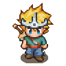
Chiến binh: là những nhân vật đại diện
cho sức mạnh và thể lực phi thường.
Thuộc tính đặc trưng: hệ lửa.
Vũ khí sửa dụng: Trọng kiếm
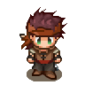
Sát thủ: kết hợp giữa sức mạnh
và sự khéo léo trong chiến đấu.
Thuộc tính đặc trưng: độc tố
Vũ khí sử dụng: Đoản kiếm
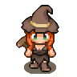
Pháp sư: đại diện cho sức mạnh tinh thần
và thể lực chống chọi với bão tố.
Thuộc tính đặc trưng: băng giá
Vũ khí sử dụng: Gậy phép
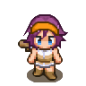
Xạ thủ: có khả năng vận dụng giữa
Sức mạnh Tinh thần và sự khéo léo.
Thuộc tính đặc trưng: sấm sét
Vũ khí sử dụng: Súng trường
2.Thế giới rộng lớn:
Thời Đại Hiệp Sĩ bao gồm 3 thế giới lớn, địa hình đa dạng cùng với những vùng đất bí ẩn đang chờ bạn khám phá.
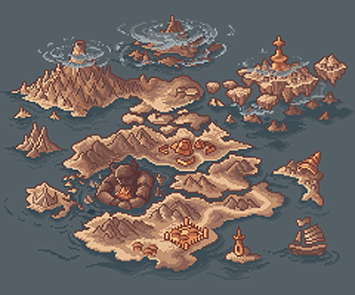
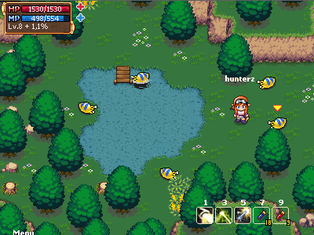
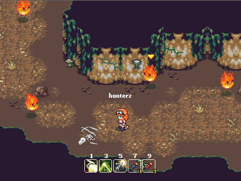
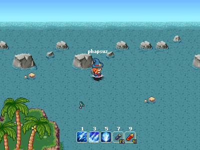
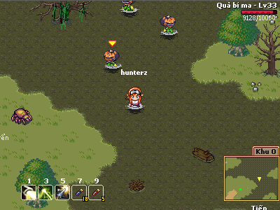

3.Hệ thống chiến đấu:
Thuộc thể loại game nhập vai chặt chém đặc trưng, Thời Đại Hiệp Sĩ mang đến hệ thống chiến đấu đa dạng theo thuộc tính và được phân chia từng nhân vật. Có 5 loại thuộc tính bao gồm: Sát thương Vật lý – Băng – Lửa – Sấm sét – Độc tố, ngoài ra còn có thêm những loại thuộc tính ẩn khác chưa được khám phá.
Hệ thống điểm tiềm năng trong game bao gồm 4 loại: Sức mạnh (STR) – Khéo léo (DEX) – Thể lực (VIT) – Tinh thần (INT). Mỗi lớp nhân vật có thể tăng điểm tiềm năng theo 2 hướng:
+ Chiến binh: Sức mạnh – Thể lực
+ Thích khách: Sức mạnh – Khéo léo
+ Pháp sư: Tinh thần – Thể lực
+ Thợ săn: Tinh thần – Khéo léo
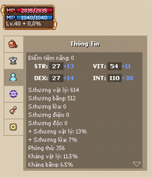
Hệ thống kỹ năng chiến đấu đa dạng và chia đều cho từng lớp nhân vật:
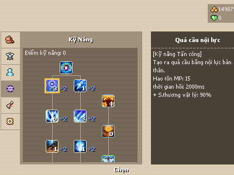
4.Hệ thống vật phẩm:
Game cung cấp hệ thống vật phẩm rất đa dạng, bao gồm trang bị dành riêng cho từng nhân vật và trang bị tự chọn. Cấp độ vật phẩm được chia theo màu đặc trưng: Trắng – Xanh Dương – Vàng – Tím – Cam. Vật phẩm cấp càng cao sẽ có những thuộc tính đặc biệt để khám phá.
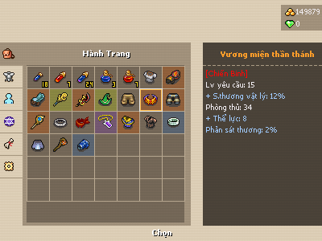
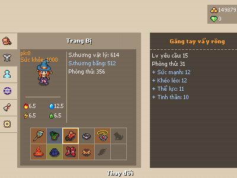
5.Hệ thống cốt truyện – Nhiệm vụ:
Trò chơi lấy bối cảnh thế giới hiệp sĩ giả tưởng và mang phong cách Trung cổ. Trong đó bạn sẽ hóa thân thành một hiệp sĩ tập sự đi phiêu lưu khám phá thế giới, gặp gỡ những nhân vật đặc biệt… Xuyên suốt câu chuyện, bạn sẽ phải đi qua nhiều vùng đất khác nhau, khám phá ra một âm mưu to lớn và những thế lực hắc ám muốn hủy diệt thế giới.
Có hai loại nhiệm vụ trong game là nhiệm vụ chính và nhiệm vụ tự chọn, bạn có thể nhận nhiệm vụ bằng cách giúp đỡ những nhân vật trong game như là một hiệp sĩ thực thụ vậy.